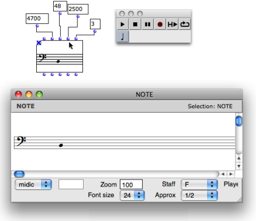
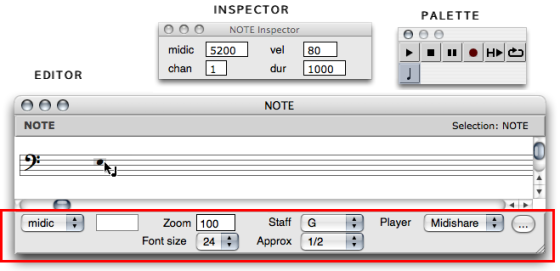
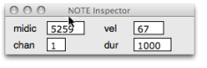
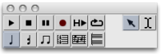
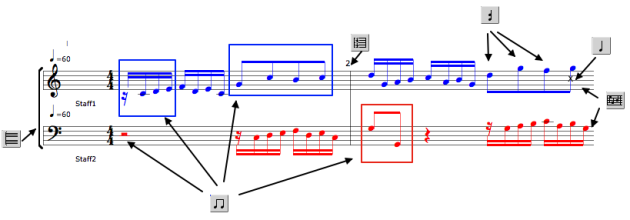

OpenMusic DocumentationHiérarchie de section : OM 6.6 User Manual > Score Objects > Score Editors > Overview
OpenMusic DocumentationHiérarchie de section : OM 6.6 User Manual > Score Objects > Score Editors > Overview
Navigation : page précédente | page suivante
Attention, votre navigateur ne supporte pas le javascript ou celui-ci à été désactivé. Certaines fonctionnalités de ce guide sont restreintes.
Overview
Score editors allow to visualize, listen to, modify, or create instances. Each score object – note , chord , chord-seq , voice , poly – has a specific score editor. Editors open with a double click on a factory box.

The displaying and parametric values of a note object can be controled directly via its editor.
Score objects are organized in a simple hierarchy with growing levels of complexity, like in a matriochka. From the note to the poly , the panel of score editors shows a growing number of editing tools. All editors follow the paradigm of the note editor.
Windows Overview
The editor window opens along with a general palette , and a score inspector .

It shows a number of pop up menus, which allow to modify the displaying of the score, and an Editor Control on the lower left corner, dedicated to editing operations.
Score Inspector
The score inspector gives access to all the related data of a selected object, which can then possibly be modified. The score inspector appears automatically at the selection of an item. To display the score inspector, select the |

|
Modifying Parametric Values via the Editor Control
General Palette

|
The general palette is declined over the set of score editors. It provides :
|
The selected edition tool is displayed as small tag when hovering the mouse over the score :
Objects and Edition Levels
Edition Tools Overview
Each of these levels can be accessed via dedicated edition tools.
| Tool | Applies to | Editors | |
|---|---|---|---|
| **** Note **** | notes – within chords – | all editors | |
| **** Chord **** | chords | all editors but note editors | |
| **** Group **** | rhythmic groups within measures | voice and poly editors | |
| **** Measure **** | entire measures within a voice | voice and poly editors | |
| **** Voice **** | one or more voices at once | voice and poly editors | |
| **** Poly **** | a whole stack of voices at once | poly editors |
Example
The poly object integrates all edition levels : note , chord , group , measure , voice .

{kind=link}
Références :
Plan :
Navigation : page précédente | page suivante
A propos...(c) Ircam - Centre Pompidou